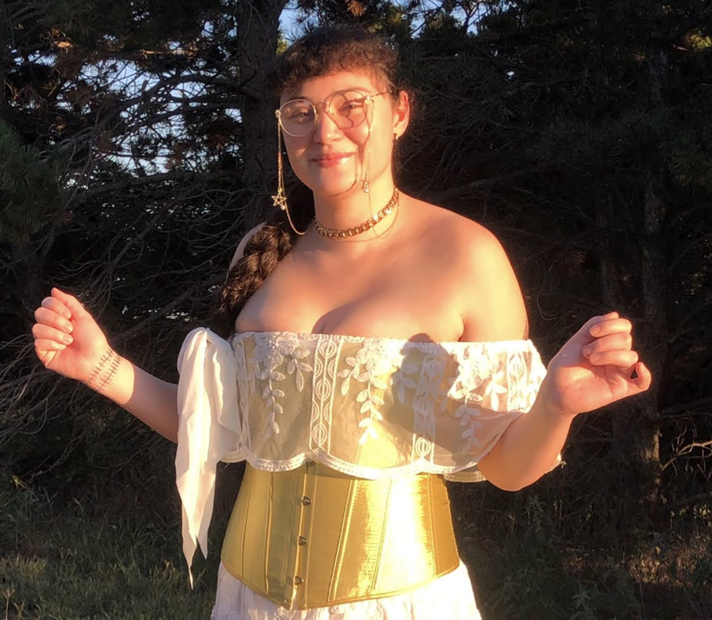

About me
Bio
- Welcome to my page!
- This Portfolio is dedicated to showcasing the projects I've done, I'm currently doing, and I hope to do in the future!
- I have a specific focus in databases with an occasional dable in API and video game creation.
- I hope to one day make a fully functioning house manager that can keep my projects and life in order.
Education
-
Austin College in Sherman Texas
- I receieved a Bachelors degree with a Major in Media and a minor in EAS and English
- Aug 2017 - May 2021
Ohio State Coding Bootcamp
- I am currently attending the Coding bootcamp and working towards aquiring a certificate of completion
- Apr 2023 - Oct 2023
Experience/Skills
- I am currently attending the Ohio State Coding Bootcamp which is teaching me how to use..
- Javascript, HTML, CSS, Bootstrap, Node.js, APIs, Git, Github
- I have also gained a Bachelors degree at Austin College in Sherman Texas. There I learned how to..
- Create an interactive story
- Write blogs on Wordpress
- Marketing and photography
- Media Creation
- I also have many years of experience creating databases for my own personal use
- Which I am more than happy to share with anyone, simply email me and I shall share one or two of them.
Projects
- Projects that are complete or on Hiatus
- I am a potato
- I created this small interactive story game for a class. While I am not currently working on it, I might return to it in the future.
- Currently Working on
- Nebulas Fables
- I am currently working with a group from my class to create an interactive mythology focused Star Chart that will provide..
- A fun and interactive database
- Mythological information based on the region and culture
- An interactive star chart that is also linked to a map of the earth and location services if you want to see exactly whats above you in real time.
- Future Projects
- A custom built API and Database for the Nebulas Fables app
- A custom house organizer
- A fully functioning notes website for all the languages I want to learn, both coding and not.